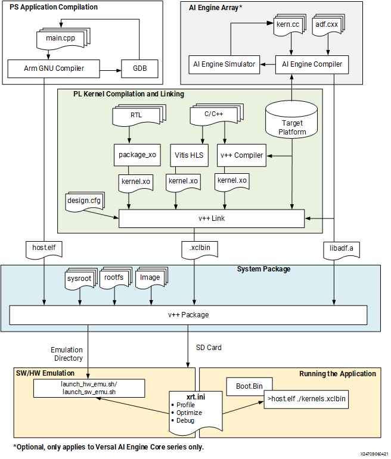

Vitis™ アプリケーション アクセラレーション開発フロー チュートリアル |
Vitis 入門チュートリアル¶
バージョン: Vitis 2021.2
パート 4: エンベデッド プロセッサ アプリケーションのビルドおよび実行¶
このチュートリアルの 4 番目のパートでは、Vitis フローでサポートされる 3 つのビルド ターゲットを使用して、vector-add の例をコンパイルして実行します。フロー全体の説明は、エンベデッド プロセッサ アプリケーション アクセラレーション開発フローを参照してください。次のフローの図もここに含まれています。イメージから、Arm プロセッサ用にホスト アプリケーションを構築するための G++ クロス コンパイルと、ザイリンクス デバイス バイナリ (xclbin) を構築するための Vitis コンパイラ (v++) を確認できます。この演習で、これらの手順を学びます。

ソフトウェア エミュレーション - カーネル コードは、エンベデッド プロセッサのエミュレーション環境 (QEMU) バージョン上で実行されるようにコンパイルされます。ソフトウェア エミュレーション ターゲットを使用すると、ビルドと実行を短時間で反復して、アルゴリズムをすばやく段階的に改良できます。このターゲットは、構文エラーを特定し、アプリケーションと共に実行されるカーネル コードをソース レベルでデバッグし、システムの動作を検証するのに便利です。詳細は、ソフトウェア エミュレーションを参照してください。
ハードウェア エミュレーション - カーネル コードがハードウェア モデル (RTL) にコンパイルされ、Video ロジック シミュレータで実行されます。ホスト アプリケーションは、エンベデッド プロセッサのエミュレーション環境 (QEMU) バージョン上で実行されます。ビルドおよび実行ループにかかる時間は長くなりますが、詳細でサイクル精度のカーネル アクティビティが表示されます。このターゲットは、FPGA に配置するロジックの機能をテストして、初期パフォーマンス見積もりを取得する場合に便利です。詳細は、ハードウェア エミュレーションを参照してください。
ハードウェア - カーネル コードがハードウェア モデル (RTL) にコンパイルされ、FPGA にインプリメントされて、実際の FPGA で実行されるバイナリが生成されます。エンベデッド プロセッサ プラットフォームでは、ホスト アプリケーション、xclbin、必須のサポート ファイルが SD カード (たとえば) の書き込まれ、それがシステムのブートと設定に使用されます。詳細は、アプリケーション ハードウェア ビルドの実行を参照してください。
ZCU102 Zynq MPSoC エンベデッド プロセッサ プラットフォームでのビルドと実行¶
環境の設定¶
重要: このチュートリアルを実行するには、Vitis 2021.1 以降が必要です。
注記: 次の手順は、bash シェルで実行していることを前提としています。
Vitis を実行する環境を設定するには、次のスクリプトを実行します。
source <VITIS_install_path>/settings64.sh
source <XRT_install_path>/setup.sh
unset LD_LIBRARY_PATH
次の環境変数が、インストールされている ZCU102 プラットフォーム、rootfs、および sysroot ディレクトリを指定するように設定されていることを確認します。
export PLATFORM_REPO_PATHS=<path to the ZCU102 platform install dir>
export ROOTFS=<path to the ZYNQMP common image directory, containing rootfs>
クロス コンパイラの SDK を正しく起動するには、SDK のソースを抽出したディレクトリで
environment-setup-aarch64-xilinx-linuxスクリプトを実行します。
source <path to the SDK>/environment-setup-aarch64-xilinx-linux
注記: ZYNQMP 共通イメージ ファイルは、Vitis エンベデッド プラットフォーム ページからダウンロードできます。このファイルには、ザイリンクス Zynq MPSoC デバイスの sysroot、rootfs、およびブート イメージが含まれます。
ソフトウェア エミュレーションをターゲットに指定¶
ソフトウェア エミュレーション用に構築するには、ターゲットのビルド ディレクトリを設定するための次のコマンドを入力します。
cd <Path to the cloned repo>/Getting_Started/Vitis/example/zcu102
mkdir sw_emu
cp xrt.ini sw_emu
cp run_sw_emu.sh sw_emu
cd sw_emu
ターゲットのビルド ディレクトリに移動したあと、ホスト アプリケーションおよびデバイス バイナリを構築するために次のコマンドを入力します。
$CXX -Wall -g -std=c++11 ../../src/host.cpp -o ./app.exe -I/usr/include/xrt -lOpenCL -lpthread -lrt -lstdc++
v++ -c -t sw_emu --config ../../src/zcu102.cfg -k vadd -I../../src ../../src/vadd.cpp -o ./vadd.xo
v++ -l -t sw_emu --config ../../src/zcu102.cfg ./vadd.xo -o ./vadd.xclbin
v++ -p -t sw_emu --config ../../src/zcu102.cfg ./vadd.xclbin --package.out_dir ./package --package.rootfs ${ROOTFS}/rootfs.ext4 --package.sd_file ${ROOTFS}/Image --package.sd_file ./xrt.ini --package.sd_file ./app.exe --package.sd_file ./vadd.xclbin --package.sd_file ./run_sw_emu.sh
次に、これら 4 つのコマンドを簡単に説明します。
$CXXは、Arm クロス コンパイラを使用してホスト アプリケーションをコンパイルします。この変数には、クロス コンパイルに関連したフル コンパイラ実行ファイル プラス フラグが含まれ、SDK 環境設定スクリプトを実行するときに設定されます。詳細は、ホスト プログラムのビルドを参照してください。v++ -cは、vector-add アクセラレータのソース コードをコンパイルされたカーネル オブジェクト (.xo ファイル) にコンパイルします。詳細は、Vitis コンパイラでのカーネルのコンパイルを参照してください。v++ -lは、コンパイルされたカーネルをターゲット プラットフォームにリンクし、FPGA バイナリ (.xclbin ファイル) を生成します。詳細は、カーネルのリンクを参照してください。v++ -pは、ホスト実行ファイル、rootfs、FPGA バイナリ、およびその他のいくつかのファイルをパッケージ化し、ブータブル イメージを生成します。詳細は、エンベデッド プラットフォームのパッケージを参照してください。
データセンター アクセラレータ カード用のビルドとエンベデッド プラットフォーム用の構築との間には 2 つの重要な違いがあります。
1 つは
v++ --packageコマンドの使用です。これはエンベデッド プロセッサ プラットフォーム フローに必須のステップで、データセンター フローではオプションで実行する場合がほとんどです。データセンター アプリケーションは X86 環境で実行され、ディスクから xclbin が読み込まれます。ところが、エンベデッド プロセッサ プラットフォーム フローの場合、普通はプロセッサを SD カードからブートする必要があるので、--packageオプションにより、ファイルが収集されて、SD カードが生成されます。もう 1 つは
emconfigutilコマンドの使用です。このコマンドは、ハードウェア プラットフォームのエミュレーション バージョンを構築するために、データセンター フローで使用されます。ところが、エンベデッド プラットフォーム フローでは、エミュレーションの実行で説明しているエミュレーション環境をエンベデッド プロセッサで使用する必要があります。このフローでは、エミュレーション プラットフォームではなく、launch_emulationスクリプトを使用します。
v++ コマンドの -t オプションは、ビルド ターゲットを指定します。ここでは、ソフトウェア エミュレーション用に構築しているため、sw_emu に設定されています。
また、--config オプションを使用すると、追加オプションを含むコンフィギュレーションファイルの名前を指定できます。ここでは、このコンフィギュレーション ファイルを使用して、ターゲット プラットフォームの名前と特定のメモリ バンクのカーネル引数のマップを指定します。
save-temps=1
debug=1
# Enable profiling of data ports
[profile]
data=all:all:all
ソフトウェア エミュレーションのビルドは迅速で、1 ～ 2 分以上かかることはありません。ビルド プロセスが完了したら、次のようにソフトウェア エミュレーションを開始できます。
./package/launch_sw_emu.sh -forward-port 1440 22
このコマンドは、ソフトウェア エミュレーションを起動し、Xilinx Quick Emulation (QEMU) 環境を起動して、ブート シーケンスを開始します。詳細は、launch_emulator ユーティリティを参照にしてください。
重要: QEMU 環境からファイルを取り出すためには、エンベデッド プロセッサ プラットフォームでのエミュレーションの実行で説明されている方法で、
-forward-portオプションを使用する必要があります。
Linux の起動が完了したら、QEMU 環境内で次のコマンドを入力してサンプル プログラムを実行します。
cd /media/sd-mmcblk0p1
export XILINX_XRT=/usr
export XCL_EMULATION_MODE=sw_emu
./app.exe
実行が正常に完了したことを示す次のメッセージが表示されます。
INFO: Found Xilinx Platform
INFO: Loading 'vadd.xclbin'
TEST PASSED
zcu104/sw_emu ディレクトリの中を確認すると、この演習の間に次のファイルのいくつかが作成されているのがわかります。
app.exe: コンパイルされ、リンクされたホスト アプリケーション
vadd.xclbin: カーネルおよびターゲット プラットフォームをリンクするデバイス バイナリ
opencl_trace.csv: アプリケーション ランタイム中に発生するイベントのレポート
summary.csv: アプリケーション プロファイルのレポート
xrt.ini: ランタイム初期化ファイル
xrt.run_summary: アプリケーション ランタイムのイベントのサマリ レポート
これらのファイルは、ソフトウェア エミュレーション ビルドをターゲットにしているビルドおよび実行プロセスの結果、出力されるファイルです。これらのファイルの一部を、このチュートリアルのパート 5 で詳しく説明します。ファイルをあとで確認するには、QEMU 環境からファイルを取り出して、ローカル コンピューターにコピーする必要があります。その場合は、たとえば、エンベデッド プロセッサ プラットフォームでのエミュレーションの実行で説明されているように、scp オプションを使用します。
scp -P 1440 root@127.0.0.1:/media/sd-mmcblk0p1/xrt.run_summary ./xrt.run_summary
Ctrl +A + X を押して QEMU を終了し、bash シェルに戻ります。
ヒント: QEMU 環境を終了できない場合は、
kill -9 <qemu_pid>を使用して、ほかのターミナル ウィンドウからプロセスを強制終了させます。
ハードウェア エミュレーションをターゲットに指定¶
ハードウェア エミュレーション用に構築するには、ターゲットのビルド ディレクトリを設定するための次のコマンドを入力します。
cd <Path to the cloned repo>/Getting_Started/Vitis/example/zcu102
mkdir hw_emu
cp xrt.ini hw_emu
cp run_hw_emu.sh hw_emu
cd hw_emu
ターゲットのビルド ディレクトリに移動したあと、ホスト アプリケーションおよびデバイス バイナリを構築するために次のコマンドを入力します。
$CXX -Wall -g -std=c++11 ../../src/host.cpp -o app.exe -I/usr/include/xrt -lOpenCL -lpthread -lrt -lstdc++
v++ -c -t hw_emu --config ../../src/zcu102.cfg -k vadd -I../../src ../../src/vadd.cpp -o vadd.xo
v++ -l -t hw_emu --config ../../src/zcu102.cfg ./vadd.xo -o vadd.xclbin
v++ -p -t hw_emu --config ../../src/zcu102.cfg ./vadd.xclbin --package.out_dir package --package.rootfs ${ROOTFS}/rootfs.ext4 --package.sd_file ${ROOTFS}/Image --package.sd_file xrt.ini --package.sd_file app.exe --package.sd_file vadd.xclbin --package.sd_file run_app.sh
これらのコマンドの簡単な説明は、「ソフトウェア エミュレーションをターゲットに指定」を参照してください。前の手順との唯一の違いは、v++ ターゲット (-t) オプションで、sw_emu から hw_emu に変更されます。その他のオプションはすべて同じままです。
ハードウェア エミュレーションはソフトウェア エミュレーションよりも時間がかかりますが、ハードウェア アクセラレータ カードをターゲットにしているときよりは時間はかかりません。ビルド プロセスが完了したら、パッケージ ステップで生成された起動スクリプトを使用して、ハードウェア エミュレーションを起動できます。
./package/launch_hw_emu.sh
Linux の起動が完了したら、QEMU コマンド プロンプトに次のコマンドを入力してサンプル プログラムを実行します。
cd /media/sd-mmcblk0p1
export XILINX_XRT=/usr
export XCL_EMULATION_MODE=hw_emu
./app.exe
TEST PASSED というメッセージが表示され、実行が正常に完了したことが示されます。
QEMU でアプリケーションを実行すると、実行中にいくつかのレポート ファイルが生成されます。ソフトウェア エミュレーション ビルドをターゲットにしている実行プロセスの結果、出力されるファイルです。これらのファイルの一部を、このチュートリアルのパート 5 で詳しく説明します。ファイルをあとで確認するには、QEMU 環境からファイルを取り出して、ローカル コンピューターにコピーする必要があります。その場合は、たとえば、エンベデッド プロセッサ プラットフォームでのエミュレーションの実行で説明されているように、scp オプションを使用します。
scp -P 1440 root@127.0.0.1:/media/sd-mmcblk0p1/xrt.run_summary ./xrt.run_summary
Ctrl +A + X を押して QEMU を終了し、bash シェルに戻ります。
ヒント: QEMU 環境を終了できない場合は、
kill -9 <qemu_pid>を使用して、ほかのターミナル ウィンドウからプロセスを強制終了させます。
ハードウェア ターゲットの指定¶
ハードウェア ターゲット用に構築するには、ターゲットのビルド ディレクトリを設定するための次のコマンドを入力します。
cd <Path to the cloned repo>/Getting_Started/Vitis/example/zcu102
mkdir hw
cp xrt.ini hw
cp run_hw.sh hw
cd hw
ターゲットのビルド ディレクトリに移動したあと、ホスト アプリケーションおよびデバイス バイナリを構築するために次のコマンドを入力します。
$CXX -Wall -g -std=c++11 ../../src/host.cpp -o app.exe -I/usr/include/xrt -lOpenCL -lpthread -lrt -lstdc++ -O
v++ -c -t hw --config ../../src/zcu102.cfg -k vadd -I../../src ../../src/vadd.cpp -o vadd.xo
v++ -l -t hw --config ../../src/zcu102.cfg ./vadd.xo -o vadd.xclbin
v++ -p -t hw --config ../../src/zcu102.cfg ./vadd.xclbin --package.out_dir package --package.rootfs ${ROOTFS}/rootfs.ext4 --package.sd_file ${ROOTFS}/Image --package.sd_file xrt.ini --package.sd_file app.exe --package.sd_file vadd.xclbin --package.sd_file run_app.sh
ハードウェアをターゲットにするには、v++ -t オプションを hw に設定し、emconfigutil ステップはエミュレーションにのみ適用されるため省略されます。その他のオプションはすべて同じままです。
ハードウェア ターゲットのビルドには数時間かかることがありますが、正確な所要時間は、ビルドするコンピューターとその負荷によって異なります。
ビルド プロセスが完了したら、sd_card ディレクトリを SD カードにコピーし、プラットフォームに接続して、Linux プロンプトが表示されるまで起動します。この時点で、エンベデッド プロセッサ プラットフォームで次のコマンドを入力してアクセラレーションされたアプリケーションを実行します。
cd /media/sd-mmcblk0p1
export XILINX_XRT=/usr
./app.exe
実行が正常に完了したことを示す TEST PASSED という同じメッセージが表示されます。zcu102/hw フォルダーを確認すると、このビルドおよび実行プロセスの間に作成されたファイルを確認できます。これらのファイルの簡単な説明は、「ソフトウェア エミュレーションをターゲットに指定」を参照してください。
お疲れさまでした。これで、ZCU102 カードで初めて Vitis アクセラレーション アプリケーションを実行できました。Vitis ツールをさらに学ぶには、Vitis チュートリアルを進めていってください。また、ホスト アプリケーションおよびカーネル コードの例を使用するには、 Vitis_Accel_例を参照してください。
次の手順¶
結果の表示とレポートの解析をクリックしてください。
ライセンス規約
Apache ライセンス、バージョン 2.0 (以下「ライセンス」) に基づいてライセンス付与されています。本ライセンスに準拠しないと、このファイルを使用することはできません。 ライセンスのコピーは、http://www.apache.org/licenses/LICENSE-2.0 から入手できます
適切な法律で要求されるか、書面で同意された場合を除き、本ライセンスに基づいて配布されるソフトウェアは、明示的または黙示的を問わず、いかなる種類の保証または条件もなく、「現状のまま」配布されます。 ライセンスに基づく権限と制限を管理する特定の言語については、ライセンスを参照してください。
Copyright© 2020-2021 Xilinx